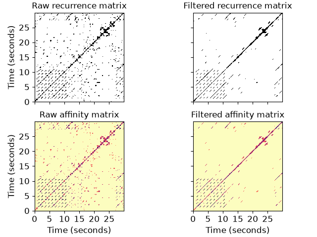

librosa.segment.timelag_filter
- librosa.segment.timelag_filter(function, pad=True, index=0)[source]
Apply a filter in the time-lag domain.
This is primarily useful for adapting image filters to operate on
recurrence_to_lagoutput.Using
timelag_filteris equivalent to the following sequence of operations:>>> data_tl = librosa.segment.recurrence_to_lag(data) >>> data_filtered_tl = function(data_tl) >>> data_filtered = librosa.segment.lag_to_recurrence(data_filtered_tl)
- Parameters:
- functioncallable
The filtering function to wrap, e.g.,
scipy.ndimage.median_filter- padbool
Whether to zero-pad the structure feature matrix
- indexint >= 0
If
functionaccepts input data as a positional argument, it should be indexed byindex
- Returns:
- wrapped_functioncallable
A new filter function which applies in time-lag space rather than time-time space.
Examples
Apply a 31-bin median filter to the diagonal of a recurrence matrix. With default, parameters, this corresponds to a time window of about 0.72 seconds.
>>> y, sr = librosa.load(librosa.ex('nutcracker'), duration=30) >>> chroma = librosa.feature.chroma_cqt(y=y, sr=sr) >>> chroma_stack = librosa.feature.stack_memory(chroma, n_steps=3, delay=3) >>> rec = librosa.segment.recurrence_matrix(chroma_stack) >>> from scipy.ndimage import median_filter >>> diagonal_median = librosa.segment.timelag_filter(median_filter) >>> rec_filtered = diagonal_median(rec, size=(1, 31), mode='mirror')
Or with affinity weights
>>> rec_aff = librosa.segment.recurrence_matrix(chroma_stack, mode='affinity') >>> rec_aff_fil = diagonal_median(rec_aff, size=(1, 31), mode='mirror')
>>> import matplotlib.pyplot as plt >>> fig, ax = plt.subplots(nrows=2, ncols=2, sharex=True, sharey=True) >>> librosa.display.specshow(rec, y_axis='s', x_axis='s', ax=ax[0, 0]) >>> ax[0, 0].set(title='Raw recurrence matrix') >>> ax[0, 0].label_outer() >>> librosa.display.specshow(rec_filtered, y_axis='s', x_axis='s', ax=ax[0, 1]) >>> ax[0, 1].set(title='Filtered recurrence matrix') >>> ax[0, 1].label_outer() >>> librosa.display.specshow(rec_aff, x_axis='s', y_axis='s', ... cmap='magma_r', ax=ax[1, 0]) >>> ax[1, 0].set(title='Raw affinity matrix') >>> librosa.display.specshow(rec_aff_fil, x_axis='s', y_axis='s', ... cmap='magma_r', ax=ax[1, 1]) >>> ax[1, 1].set(title='Filtered affinity matrix') >>> ax[1, 1].label_outer()
